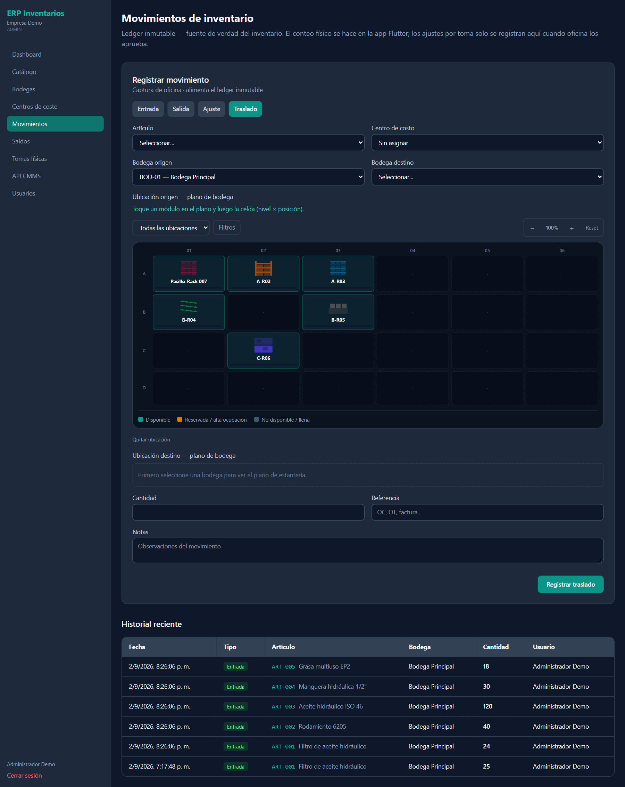

Portal
Movimientos de inventario
Ledger inmutable — fuente de verdad del inventario. El conteo físico se hace en la app; los ajustes por toma solo se registran aquí cuando oficina los aprueba.


Explicación de campos
| Campo / control | Qué es | Cómo usarlo |
|---|---|---|
| Entrada / Salida / Ajuste / TrasladoObligatorio | Tipo de movimiento. | Cambia los campos visibles y el texto del botón. |
| ArtículoObligatorio | Qué se mueve. | Seleccione del catálogo. |
| Centro de costoOpcional | Imputación del movimiento (“COD — nombre (Tipo)”). | “Sin asignar” si no aplica. |
| Bodega / Bodega origenObligatorio | Bodega afectada. En Traslado es la de salida. | — |
| Bodega destinoObligatorio | Solo en Traslado. | Debe ser distinta a la de origen. |
| Ubicación origen — plano de bodegaOpcional | Posición de la que sale (Salida, Traslado, Ajuste). | Toque un módulo y luego la celda (nivel × posición). Quitar ubicación la limpia. |
| Ubicación destino — plano de bodegaOpcional | Posición a la que entra (Entrada, Traslado, Ajuste). | Igual que la de origen. |
| CantidadObligatorio | Unidades del movimiento. | Mayor a cero. |
| Costo unitarioOpcional | Solo en Entrada. | Alimenta el costo promedio. |
| ReferenciaOpcional | OC, OT, factura… | Trazabilidad del documento. |
| NotasOpcional | Observaciones del movimiento. | — |
| Registrar entrada / salida / ajuste / traslado | Graba en el ledger. | Confirma con “Movimiento registrado en el ledger”. |
Historial reciente
| Campo / control | Qué es | Cómo usarlo |
|---|---|---|
| Columnas | Fecha, Tipo, Artículo, Bodega, Cantidad, Usuario. | Muestra los últimos movimientos. |
!
Ledger inmutableUn movimiento no se edita ni se borra. Para corregir, registre un Ajuste o el movimiento inverso.